This chapter specifies the pages of repoctl ui for packages and releases. They are Packages, the package page, the repository browser, the publish flow from review to result, and the Signing page. The frame of all pages is in Web UI; the build pages are in ui-build.html.
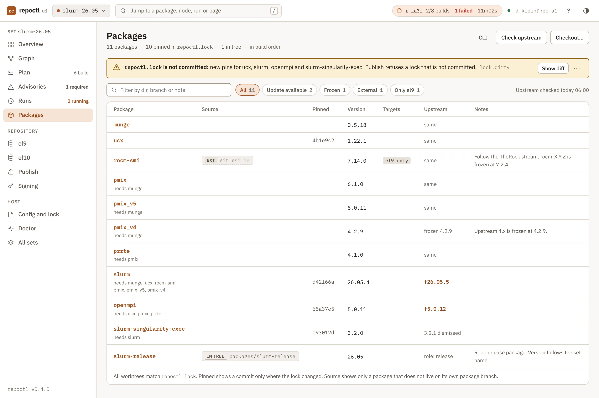
The Packages page lists the packages of the set with source, pin, worktree, version, targets and upstream. It answers "which package needs a look".
repoctl list and repoctl upstream --json.| Column | Content | Story at 18:01 |
|---|---|---|
| Package | Dir, and a muted "needs …" line with the dependencies in the set. | slurm: "needs munge, ucx, rocm-smi, pmix, pmix_v5, pmix_v4" |
| Source | Empty for a branch of this repository. A badge for the other sources. | rocm-smi "EXT git.gsi.de", slurm-release "IN TREE" |
| Pinned | The short commit in repoctl.lock, only on a row whose pin is not committed or whose worktree differs. | ucx 4b1e9c2, slurm d42f66a, openmpi 65a37e5, slurm-singularity-exec 093012d |
| Worktree | Empty when in-sync. Amber text for ahead, dirty or not checked out. | all in-sync |
| Version | The spec version at the pin. | ucx 1.22.1 |
| Targets | Only when the package does not build for all targets. | rocm-smi "el9 only" |
| Upstream | Quiet text when it equals the version, else accent text, not a pill (R3). | slurm "↑ 26.05.5", openmpi "↑ 5.0.12", pmix_v4 "frozen 4.2.9", slurm-release "role: release" |
| Notes | The first line of packages[dir].notes. | pmix_v4 "Upstream 4.x is frozen at 4.2.9." |
An unpinned or orphaned package (lifecycle.html#lock-states) gets a row with the state word and a copy command, for example repoctl pin DIR. The UI does not edit the package list. To add, retire or rename a package, the human changes repoctl.yaml (lifecycle.html#changes).
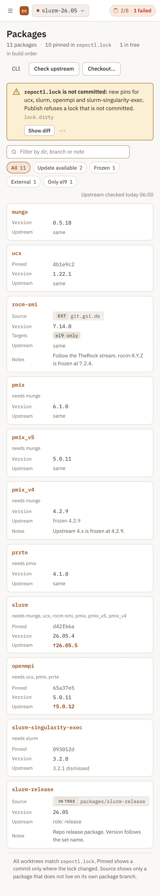
/s/<set>/packages[?filter=update|frozen|external|partial]repoctl list, repoctl status, repoctl upstreamset-head (banner, pins, worktrees), upstream (Upstream column)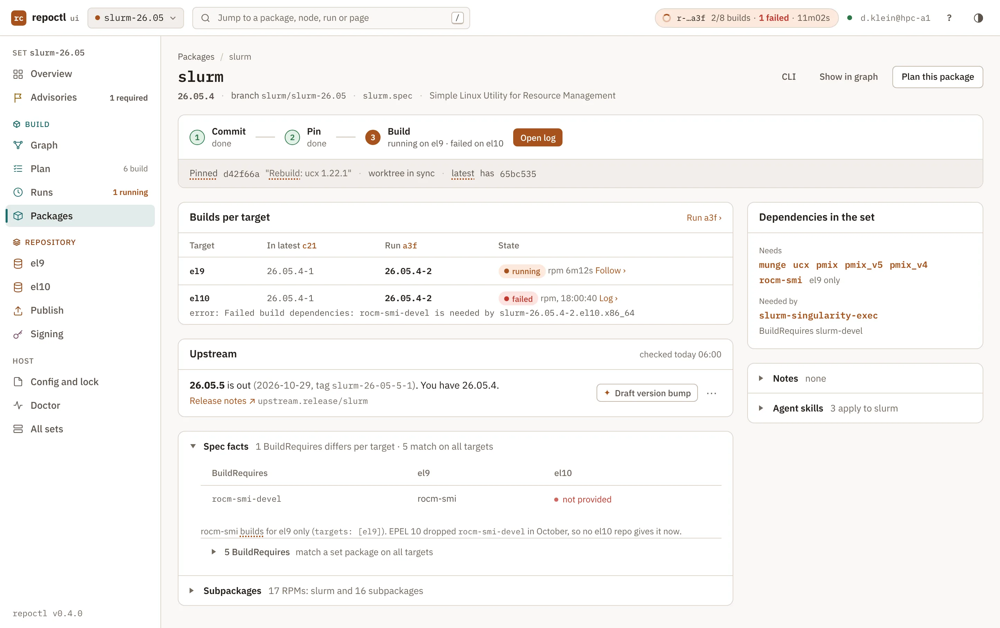
The package page shows one package: lock state, builds per target, spec facts, upstream and dependents. It leads the human to the next step of a package change.
| Part | slurm at 18:01 | ucx at 17:45 (before the pin) |
|---|---|---|
| Step line | 1 done · 2 done · 3 running on el9, failed on el10 | 1 done · 2 open · 3 open |
| Primary | Open log (slurm@el10) | Pin 4b1e9c2 |
| Lock and worktree | One quiet line: pinned d42f66a "Rebuild: ucx 1.22.1", worktree in-sync. latest has 65bc535, so that hash shows too. | Pinned 907c60d, worktree 4b1e9c2 "Bump to 1.22.1", ahead 1 (amber). Note: "Not on origin yet. Publish refuses a pin that is not on its remote." |
| Commits since pin | Not shown (none) | 4b1e9c2 "Bump to 1.22.1", Dennis Klein, 17:40, +5 −3. Older commits in a fold. |
| Builds per target | el9: latest 26.05.4-1, run a3f 26.05.4-2, running · rpm 6:12. el10: failed · rpm, the first error line error: Failed build dependencies: rocm-smi-devel is needed and Log. | el9 and el10: latest 1.22.0-2. The plan action after the pin: build, commit-changed 907c60d → 4b1e9c2. |
| Spec facts (fold) | Only rows that differ per target: rocm-smi-devel gives rocm-smi on el9 and "not provided" on el10. "5 BuildRequires match on all targets". | "BuildRequires in set: none". Provides used in set: ucx-devel by slurm and openmpi. |
| Upstream | 26.05.5, 2026-10-29, tag slurm-26-05-5-1, Release notes ↗. ✦ Draft version bump is visible; ✦ Summarize upstream release is in ⋯. | One quiet line: v1.22.1 (2026-10-27), the same as the worktree. |
| Side column | Needs munge, ucx, pmix, pmix_v5, pmix_v4 and rocm-smi (el9 only). Needed by slurm-singularity-exec (BuildRequires slurm-devel). | Needed by slurm and openmpi (ucx-devel); slurm-singularity-exec via slurm. "The soname check runs after the next build" links build.html#soname. |
| Folds | Subpackages (16), Notes, Agent skills | Subpackages (14 built · 3 off by %bcond), Notes |
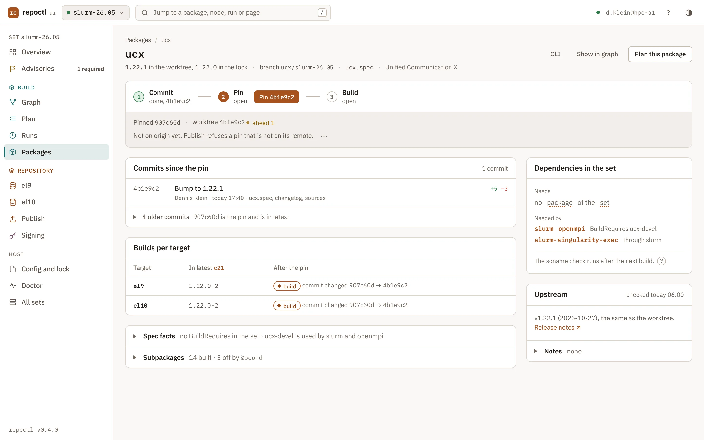
repoctl pin ucx. Pin writes repoctl.lock and makes no commit. The lock banner then shows on Packages and in Needs you.packages[dir].notes as text, and the UI does not edit it. The human edits repoctl.yaml and commits it, as for each other set input. Thus the CLI, the skills and the UI read the same committed text (CLI parity, ui.html#principles). The fold gives this hint with the key path.?target=el9 limits the page to one target. tab=history|spec|upstream opens that section./s/<set>/packages/<dir>[?target=el9&tab=history|spec|upstream]; POST /s/<set>/-/actions/pinrepoctl show DIR, repoctl pin DIR, repoctl upstream DIRset-head (step line, lock and worktree), node:DIR@TARGET (one builds row), upstream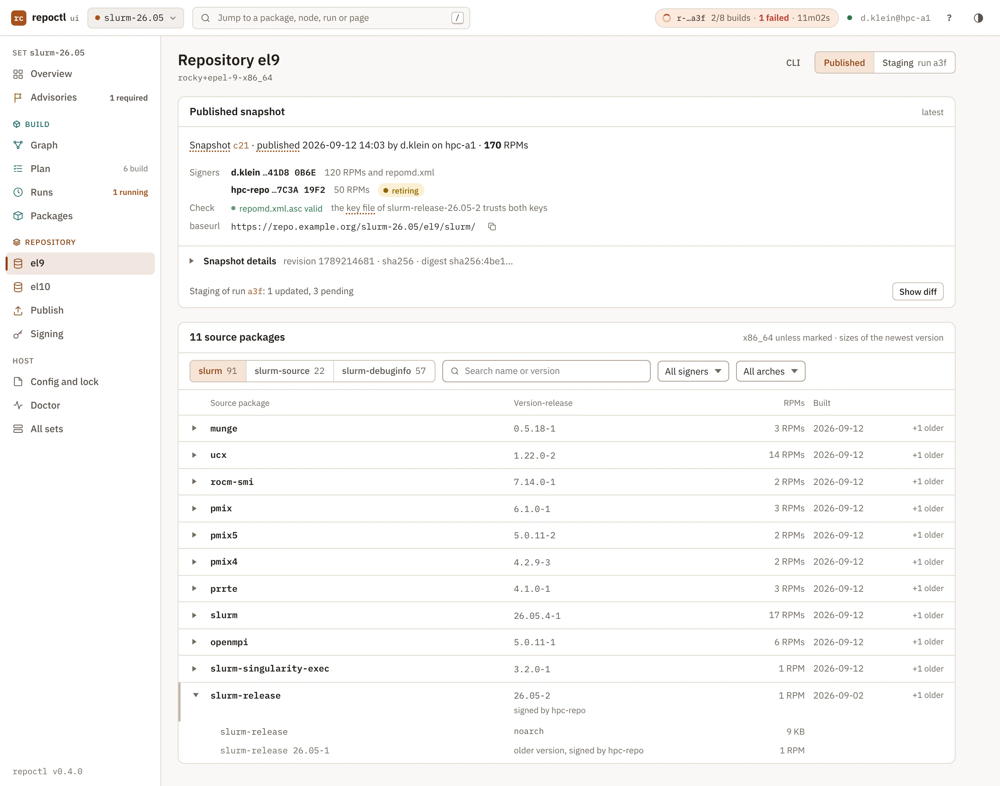
The repository browser shows the RPMs of one target as the clients see them: the published snapshot (latest) or the staging of a run. The target is in the path (ui.html#sitemap).
repoctl repo ls --target el9, repoctl repo diff --run r-20261102-1750-a3f).https://repo.example.org/slurm-26.05/el9/slurm/ has a copy button. "Repodata details ▸" holds revision, checksum type, the full publish id and the digest sha256:4be1….| State | The page shows |
|---|---|
| An RPM has no valid signature | Its group opens by default in the warn colour. The snapshot card counts it. |
| The target has no snapshot | The empty state "Not published yet" with the button Publish… (ui.html#states). |
| The local copy is behind latest | The line of state.behind with repoctl repo pull. |
/s/<set>/repo/<target>[?repo=slurm-debuginfo][&q=][&signer=][&arch=]repoctl repo ls --target el9, repoctl repo verifylast-publish (the snapshot card and the list after a publish or a pull)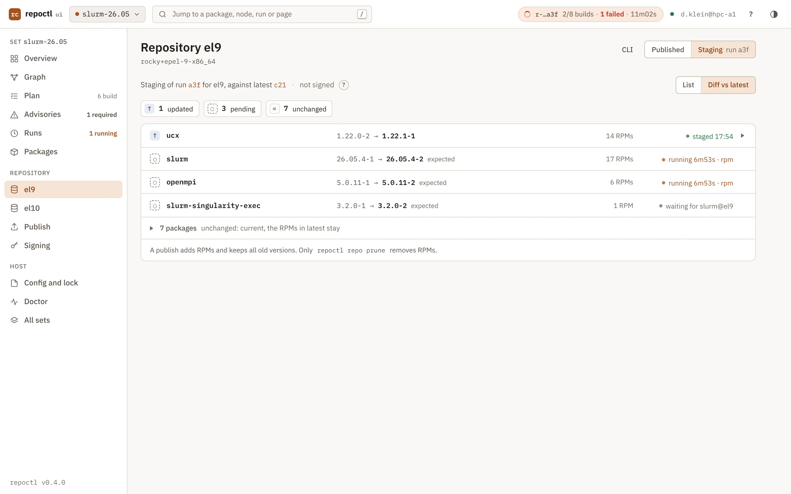
?run=RUN shows the staging of a build run for the target. List shows the staging tree. Diff vs latest shows what a publish of this run adds. A "?" line says: "Staging is not signed. Publish signs the new RPMs."
| Mark | Meaning | Story (a3f, el9, 18:01) |
|---|---|---|
| + | A source package that latest does not have | none |
| ↑ | A new version. The old version stays. | ucx 1.22.0-2 → 1.22.1-1, 14 RPMs |
| ◌ | The node still builds. The row shows the expected NVR. | slurm 26.05.4-2, openmpi 5.0.11-2, slurm-singularity-exec 3.2.0-2 |
| = | Unchanged. The rows fold to one line with a count. | 7 packages |
| ↻ | The same NVR as in latest with other content. Publish refuses it (nvr.reused). | none |
repoctl repo prune removes (publish.html#retention).repoctl repo diff writes ~ for ↑./s/<set>/repo/<target>?run=RUN; diff /s/<set>/repo/<target>/diff?run=RUNrepoctl repo ls --run RUN, repoctl repo diff --run RUNnode:DIR@TARGET (one row)The publish flow is the UI form of repoctl publish. It has the same summary, checks, eight steps and gates (advisory gate, signer gates). What a publish takes: publish.html#takes.
| Screen | URL | Mockup |
|---|---|---|
| Review | /s/<set>/publish?target=el9[&run=RUN] | publish-review |
| Accept (variant) | the same URL; the accept state lives in the form | publish-accept |
| Blocked | /s/<set>/publish?target=el10 | publish-blocked |
| Confirm | dialog /s/<set>/-/dialog/publish?target=el9; POST /s/<set>/-/actions/publish | publish-confirm |
| Progress, Failed, Done | /s/<set>/runs/p-20261103-1412-5e1 | progress, failed, done |
Each screen has the stepper "1 Review · 2 Confirm · 3 Sign and publish" under the page head. There is no snapshots page (ui.html#sitemap).
The review is the publish summary as a page. The parts, from the top:
repoctl repo resign --signer hpc-repo. Its last line is "The browser never asks for a PIN; the pinentry of this host does." Probe states: signing.html#probe.| Check row (story) | Code |
|---|---|
| base is current | state.behind |
| inputs committed, pushed and pinned, set commit 9a0c4e2 | lock.dirty, lock.unpushed, lock.orphaned, lock.missing-package |
| signer active, valid and in the right format | gate 1, gate 3 |
| signer deployed, slurm-release-26.05-2, confirmed by d.klein 2026-09-10 | gate 2 |
| key file matches sign.keys | sign.keyfile-stale |
| no NVR returns with other content | nvr.reused |
| registry login and scope; verify root for el9; disk | – |
When latest moves during the review, a banner says "latest of el9 moved since this review. Run repoctl repo pull, then review again." Continue goes off (state.behind, publish.html#admins).
repoctl publish --target el9 --dry-runadvisories, advisory:ID (gate rows), node:DIR@TARGET (target cards), last-publish (base moved), signing (key state, probe)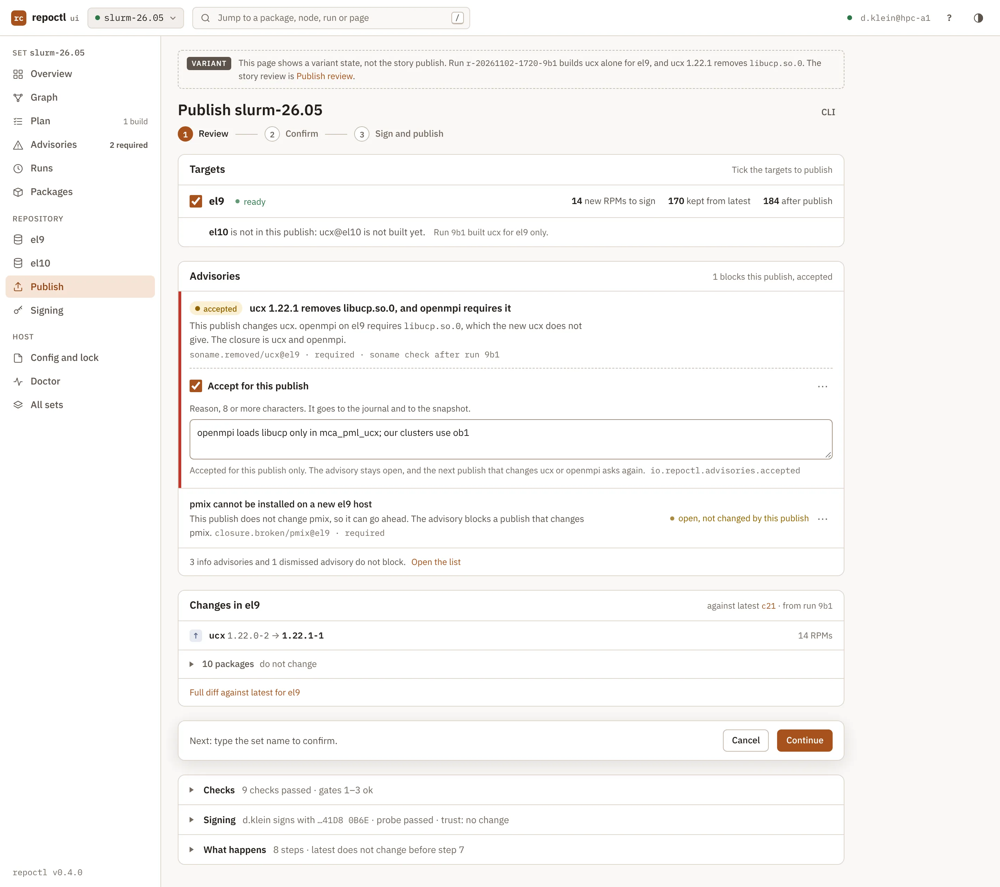
repoctl publish --target el9 --accept-advisory soname.removed/ucx@el9 --reason "openmpi loads libucp only in mca_pml_ucx; our clusters use ob1". The footer says "Next: type the set name to confirm.", and Continue is on.POST /s/<set>/-/actions/advisory-accept checks the id and the reason (ui.html#endpoints). The publish writes the acceptance (advisories.html#accept).
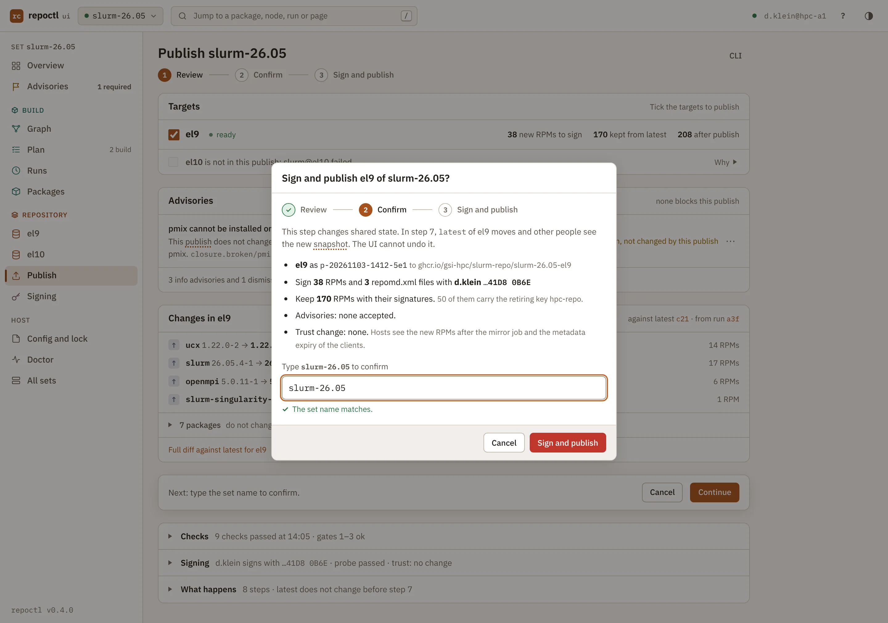
Continue opens a modal dialog with the title "Sign and publish el9 of slurm-26.05?". The dialog keeps five bullets:
ghcr.io/gsi-hpc/slurm-repo/slurm-26.05-el9 as p-20261103-1412-5e1, in quiet text.The field "Type slurm-26.05 to confirm" comes next. A trust change puts one field per added key above it, for example "Type the key id a.admin" for the publish of slurm-release-26.05-3. Sign and publish is the solid danger button, off until each field matches. Cancel and Esc close the dialog.
| Check | Result |
|---|---|
| The POST carries the CSRF header, the typed values, the plan digest and the accepted ids. The server checks all of them again. | Ok: HX-Location to the publish run page. The plan changed: the dialog says "The plan changed. Review again." and nothing starts. |
| The publish child gets the values as a UI confirmation and makes the plan digest again under the set lock (cli.html#ui-confirmation). | The plan changed: the run stops before the first signature with publish.plan-changed. The run page says "The plan changed. Review again." and links to the review. |
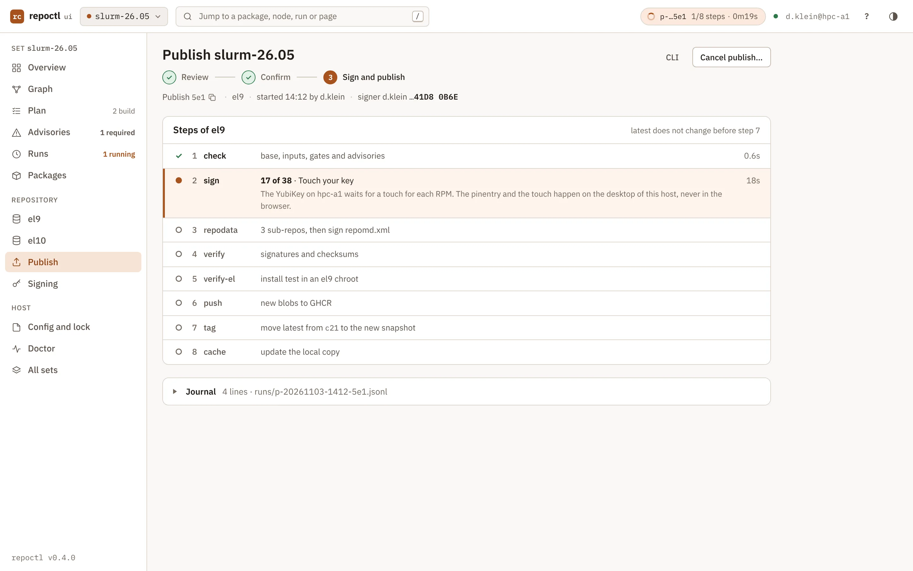
~/.local/state/repoctl/slurm-26.05/runs/p-20261103-1412-5e1.jsonl and the last lines.repoctl runs p-20261103-1412-5e1 --follow; frame publishrun:RUN (steps, sign count, "Touch your key"), chip (p-…5e1 1/8 steps · 0m19s, ui.html#run-chip)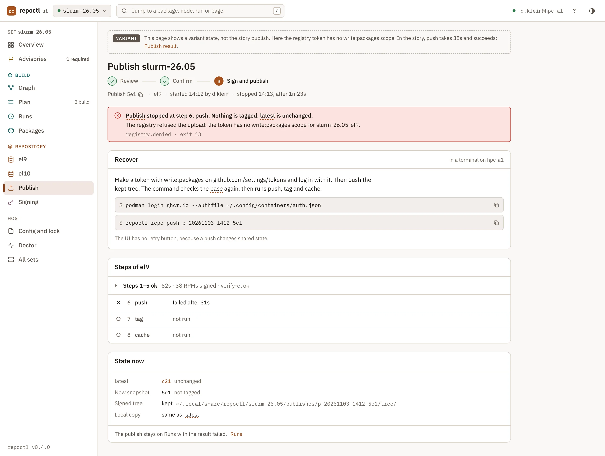
registry.denied · exit 13 (R8).oras login ghcr.io -u dklein --password-stdin and repoctl repo push p-20261103-1412-5e1 (cli.html#cmd-repo-push).| Case | State now | Recover |
|---|---|---|
| A publish of several targets | One line per target: tagged, pushable tree or not run. | repoctl repo push p-… --target ID for each target that is not tagged (publish.html#several-targets). |
Step 7 fails with snapshot.diverged (latest moved) | "The snapshot is in the registry. latest is unchanged." | repoctl repo pull and a new review. |
The page has no Signing card and no CLI toggle: the Recover box holds the commands. The publish run stays on Runs with the result failed.
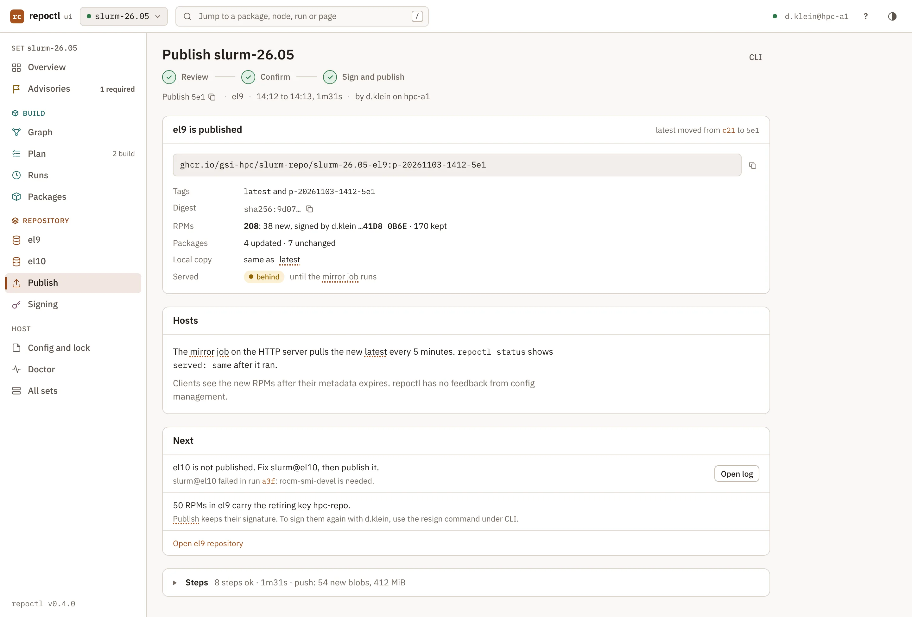
ghcr.io/gsi-hpc/slurm-repo/slurm-26.05-el9 with copy, tag p-20261103-1412-5e1, "latest moved from c21", sha256:9d07…. "208 RPMs: 38 new · 170 kept". "4 updated · 7 unchanged". Local copy: same.repoctl repo resign --signer hpc-repo. Open el9 repository is a link. The page has no filled button.repoctl runs p-20261103-1412-5e1, repoctl statusrun:RUN (the result replaces the steps), last-publish (served: behind changes to same)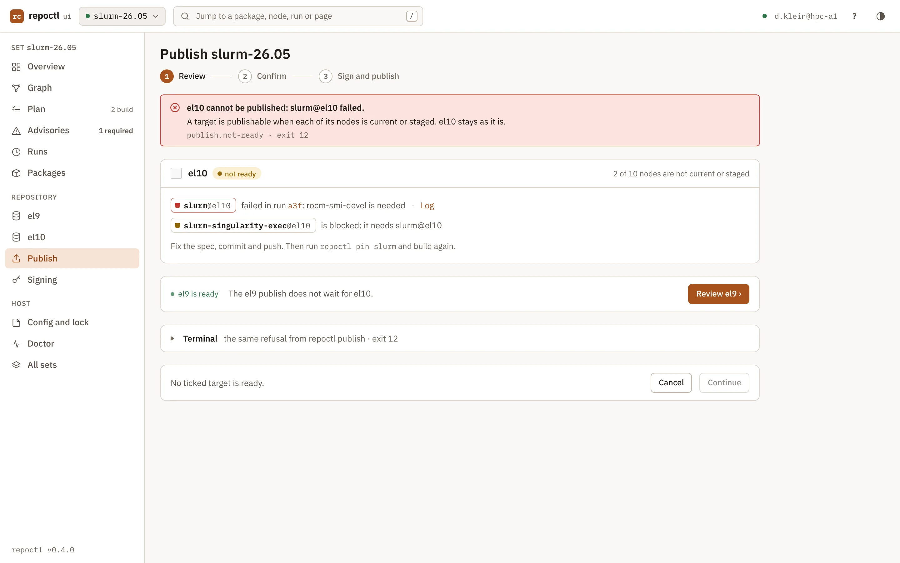
publish.not-ready · exit 12 (R8).$ repoctl publish --target el10 --dry-run repoctl: error: el10 is not publishable: slurm@el10 failed, slurm-singularity-exec@el10 is blocked hint: read the log. run: repoctl logs slurm@el10 hint: fix slurm.spec, commit and push it. run: repoctl pin slurm
When the selection holds a ready target, the page is the normal review, and el10 is one neutral line in Targets. The web UI does not hold a node back. For an urgent fix, the human runs repoctl publish --hold NODE --reason TEXT in a terminal (publish.html#urgent).
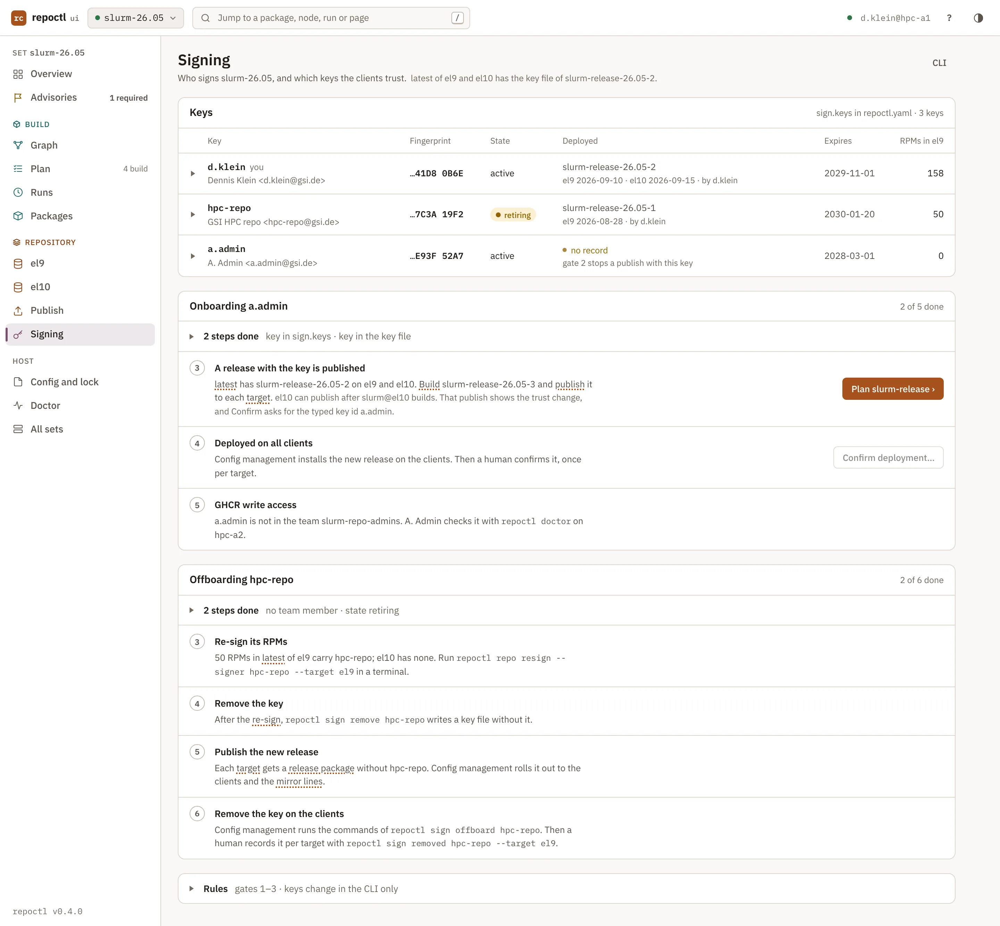
The Signing page shows the keys of sign.keys, their deployment records and the onboarding and offboarding steps. The rules are in Signing and trust.
| Key | Fingerprint | State | Deployed | Expires | RPMs in latest of el9 |
|---|---|---|---|---|---|
| d.klein (you), Dennis Klein | …41D8 0B6E | active | slurm-release-26.05-2 · el9 2026-09-10, el10 2026-09-15 · by d.klein | 2029-11-01 | 158 |
| hpc-repo, GSI HPC repo <hpc-repo@gsi.de> | …7C3A 19F2 | retiring | slurm-release-26.05-1 · el9 2026-08-28 · by d.klein | 2030-01-20 | 50 |
| a.admin, A. Admin <a.admin@gsi.de> | …E93F 52A7 | active | no record (warn: gate 2 stops a publish with this key) | 2028-03-01 | 0 |
Colour is only for retiring, revoked, no record and an expiry within 30 days. Active and "you" are plain text. The row fold holds the full fingerprint with copy. The head has the CLI toggle (repoctl sign ls, repoctl sign onboard a.admin).
Onboarding: a key with open steps gets the card "Onboarding a.admin · 2 of 5 done ▸". The open steps are visible; the done steps fold.
packages/slurm-release/RPM-GPG-KEY-slurm.repoctl doctor on hpc-a2 (publish.html#registry).Offboarding: a key in state retiring or removed with open steps gets the card "Offboarding hpc-repo · 2 of 6 done ▸". It has the six steps of repoctl sign offboard (signing.html#offboarding).
The Rules fold links signing.html#gates, signing.html#onboarding and signing.html#offboarding. The UI does not add, retire, activate, revoke or remove a key. These are CLI steps: sign add, sign retire, sign activate, sign revoke, sign remove.
/s/<set>/signingrepoctl sign ls, repoctl sign onboard ID, repoctl sign offboard IDsigning (key table and onboarding after a set commit or a publish)The dialog records that config management installed a release on all clients (signing.html#deployment-record). It opens from step 4. The example is 2026-11-05 09:12, after the el9 publish of slurm-release-26.05-3 on 2026-11-04.
The dialog writes a release record only. A key file record is a CLI step (sign deployed --keyfile). The CLI toggle of the Signing page holds repoctl sign deployed a.admin --release slurm-release-26.05-3 --target el9 --note "…".
The server gives the typed key id to the child as a UI confirmation (cli.html#ui-confirmation). The action writes keys/deployed.yaml and makes the set commit b3d94f1 (security.html#set-inputs). The toast says "Committed b3d94f1. Push it." with git push origin set/slurm-26.05 to copy. The UI does not push.
GET /s/<set>/-/dialog/sign-deployed?key=a.admin; POST /s/<set>/-/actions/sign-deployedrepoctl sign deployed ID --release NVR --target ID --note TEXTsigning (the key table and step 4 after the commit)